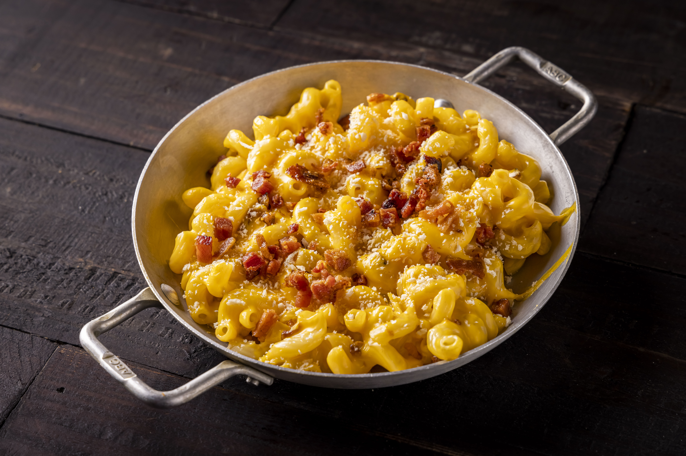

Macarrão com Molho Branco, Queijo e Bacon
Ingredientes
- 250g de macarrão (penne ou parafuso)
- 100g de bacon em cubos
- 2 colheres de sopa de manteiga
- 2 colheres de sopa de farinha de trigo
- 500ml de leite
- 100g de queijo mussarela ralado
- Sal e pimenta-do-reino a gosto
- Noz-moscada (opcional)
Modo de Preparo
- Cozinhe o macarrão conforme as instruções da embalagem.
- Frite o bacon até ficar crocante.
- Em uma panela, derreta a manteiga e adicione a farinha, mexendo por 2 minutos.
- Adicione o leite aos poucos, mexendo sempre até engrossar.
- Acrescente o queijo ralado, mexa até derreter completamente.
- Tempere com sal, pimenta e noz-moscada a gosto.
- Junte o macarrão ao molho, misture bem e finalize com o bacon por cima.
Resultado
